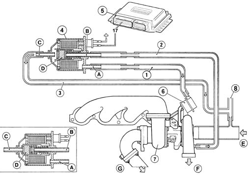

Introduction - ENGINE TURBOCHARGING SYSTEM
- Path
- Descriptions > 10 ENGINE > 1064 ENGINE TURBOCHARGING SYSTEM > Introduction - ENGINE TURBOCHARGING SYSTEM
- Kind
- system description
- Applies to
- all engines; all production periods
- Interactive page
- https://sloeber94.github.io/elrnDB-fDbl/en/#/2585399
Applies to: all engines; all production periods
The engine turbocharging system, managed by the electronic control unit, is made up of the following parts.

A, duct connected to the wastegate via a sleeve B, duct, connected to the intake side of the turbocharger via a sleeve C, duct, connected to the outlet side of the turbocharger (on the oil vapour recovery pipe) via a sleeve. D, cylinder E, from intake filter F, to heat exchanger G, to exhaust 1, connection sleeve 2, connection sleeve 3, connection sleeve 4, open 3-way control solenoid (in closed box) 5, electronic control unit 6, waste-gate valve 7, turbocharger 8, oil vapour recovery pipe.
Applies to: all engines; all production periods
The turbocharger control solenoid (4) is governed permanently by the injection control unit (5) via pin 17.
Control solenoid (4) is a three-way solenoid (A-B-C).
Duct A is connected via sleeve (1) to wastegate actuator (6). Duct B is connected via sleeve (2) to the turbocharger pressure relief duct.
Duct C is connected via sleeve (3) to the oil vapour recovery pipe, connected in turn to the turbocharger intake duct.
When the solenoid is activated by the control unit, cylinder (D) is magnetised by the coil winding and begins to pulse under the control of a duty-cycle signal: cylinder pulsing frees duct (B) and closes duct (C) to allow excess pressure from the turbocharger to reach wastegate valve actuator (6) via pipe (2) and pipe (1) and modulate incoming boost pressure
Conversely, when cylinder (D) closes duct (B) and opens duct (C), the pressure that previously acted on actuator (6) is discharged through pipe (3) into the turbocharger intake duct to increase the pressure boost.